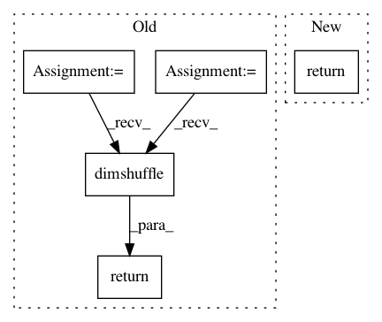

c4579a9c43a5d9f0401eed4da6ca03315685ac2b,keras/backend/theano_backend.py,,_old_batch_normalization,#Any#Any#Any#Any#Any#Any#,473
Before Change
shuffle_pattern = list(range(ndim))
shuffle_pattern[1] = shuffle_pattern[axis]
shuffle_pattern[axis] = 1
x = x.dimshuffle(shuffle_pattern)
mean = mean.dimshuffle(shuffle_pattern)
var = var.dimshuffle(shuffle_pattern)
beta = beta.dimshuffle(shuffle_pattern)
gamma = gamma.dimshuffle(shuffle_pattern)
normed = theano.sandbox.cuda.dnn.dnn_batch_normalization_test(x, gamma, beta, mean, var,
"spatial", epsilon)
if axis != 1:
normed = normed.dimshuffle(shuffle_pattern)
return normed
except AttributeError:
pass
except ValueError:
pass
After Change
var.dimshuffle(shuffle_pattern),
"spatial", epsilon).dimshuffle(shuffle_pattern)
else:
return theano.sandbox.cuda.dnn.dnn_batch_normalization_test(
x, gamma, beta, mean, var, "spatial", epsilon)
except AttributeError:
pass
except ValueError:
pass
In pattern: SUPERPATTERN
Frequency: 3
Non-data size: 5
Instances
Project Name: keras-team/keras
Commit Name: c4579a9c43a5d9f0401eed4da6ca03315685ac2b
Time: 2016-12-14
Author: gvtulder@users.noreply.github.com
File Name: keras/backend/theano_backend.py
Class Name:
Method Name: _old_batch_normalization
Project Name: keras-team/keras
Commit Name: a744b600e94ae00fbec71ef493afdff48bc3816b
Time: 2015-11-18
Author: francois.chollet@gmail.com
File Name: keras/layers/core.py
Class Name: RepeatVector
Method Name: get_output
Project Name: keras-team/keras
Commit Name: 8f2b5f0458cce4e5588238b86e3e2738952ea849
Time: 2015-11-19
Author: francois.chollet@gmail.com
File Name: keras/layers/convolutional.py
Class Name: MaxPooling1D
Method Name: get_output